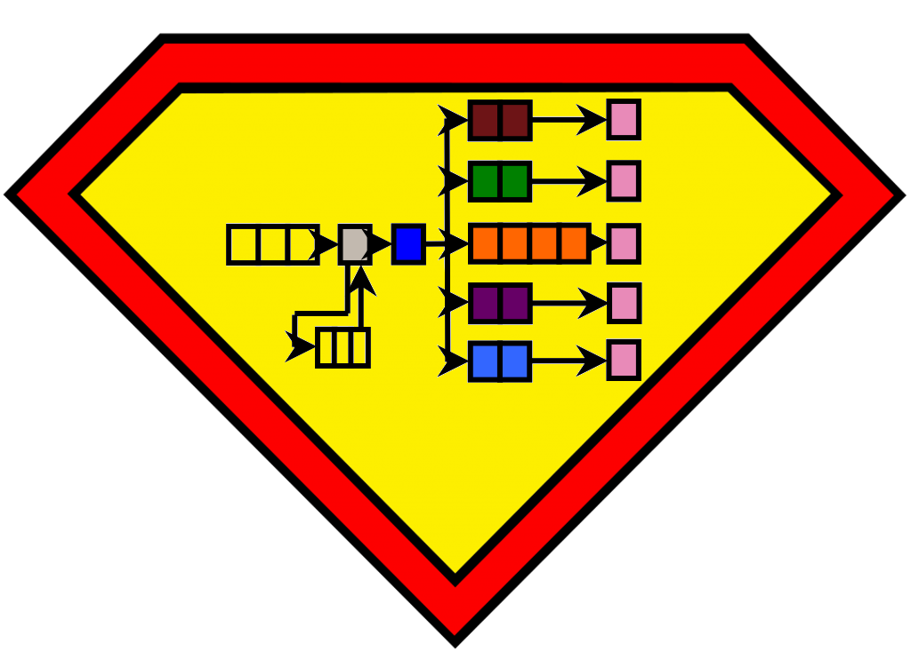
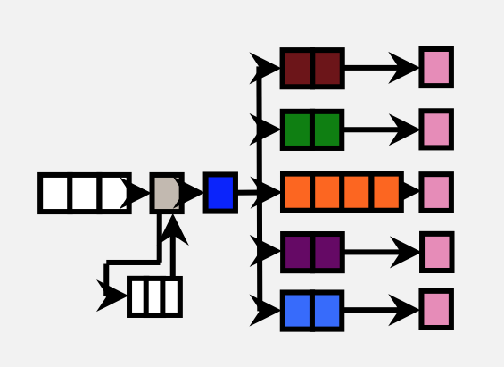

Pragmatic optimization
In modern programming
Instruction scheduling
Created by Marina (geek) Kolpakova for UNN / 2015-2016
Course Topics
- Pragmatics
- Ordering optimization approaches
- Demystifying a compiler
- Mastering compiler optimizations
- Computer Architectures
- Modern computer architecture concepts
- What every optimizer should know about caches?
- Instruction scheduling
Outline
- The second wall (dark silicon problem)
- summary
pipelined execution
The idea of pipelined execution is to break down an instruction into multiple stages so that instructions on different stages can be processed at the same clock cycle. Introduced in 1958.
Classic 5-stage pipeline
- Instruction fetch cycle (IF)
- An instructions is fetched from I$ and may be placed either into an IR or a queue of pending instructions.
- Instruction decode/register fetch cycle (ID)
- An instruction is decoded, register operands are read from the register file.
- Execution/effective address cycle (EX)
- Either an ALU operation is performed or an effective address for memory access is computed, which depends on an instruction type
Classic 5-stage pipeline
- Memory access/branch completion cycle (MEM)
- The memory is accessed, if appropriate.
- Writeback cycle (WB)
- The result is written into the register file, whether it comes from the memory system (for a load) or from the ALU (for an ALU instruction)
Without pipelined execution
with pipelined execution
Pipeline hazards
Pipeline hazard is a situation that prevents the next instruction in the pipeline from executing during its designated clock cycle and thus cause pipeline stalls
All the terms used are taken from Hennessey & Paterson
Pipeline hazards
- Structural hazard
- arise from resource conflicts when the hardware cannot support all possible combinations of instructions simultaneously in overlapped execution.
- Data hazard
- arise when an instruction depends on the results of a previous instruction in a way that is exposed by the overlapping of instructions in the pipeline.
- Control hazard
- arise from the pipelining of branches and other instructions that change the PC.
Superscalar
multiple-issue superscalars: Cortex-A53
Instructions are dispatched 2 per cycle to the appropriate issue queue.Issue Width — 2 μops, Pipeline Length — 8 stages, Pipeline Length — 8 stages, Number of pipes — 5: I0, I1, FP, B, LD/DT.

image source is AnandTech.com
{kind=link}
Utilization Wall
With each successive process generation, the percentage of a chip that can actively switch drops exponentially due to power constraints.why exponent?
Summary
THE END